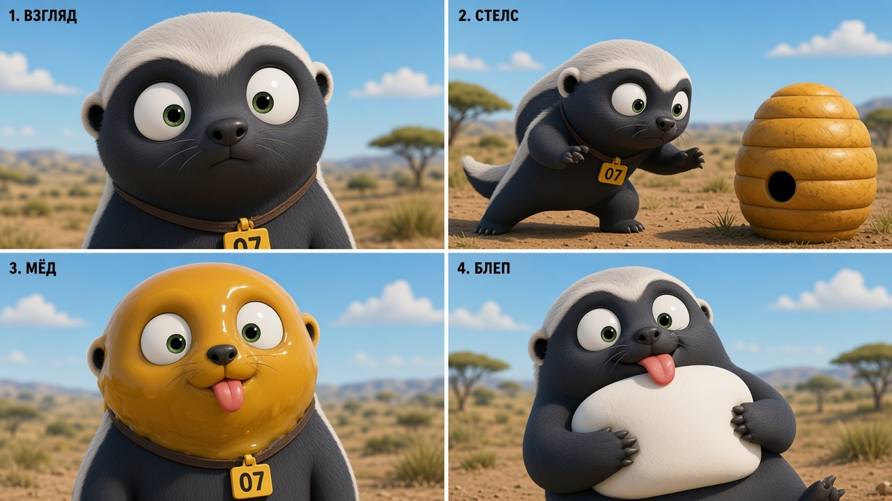
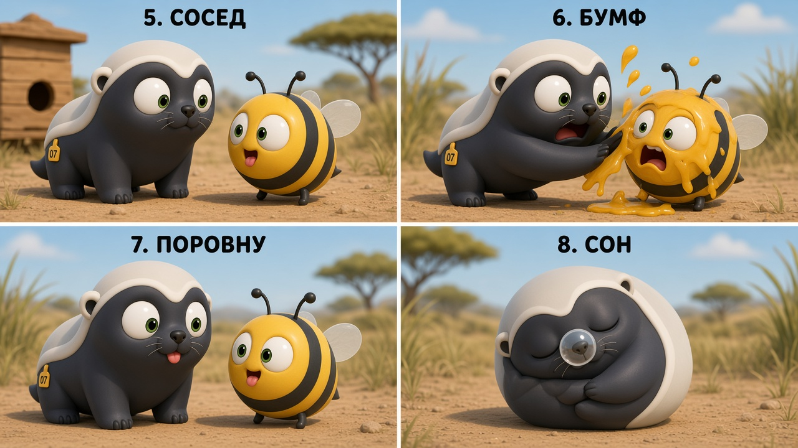

стиль SEALOOK · 0+
МЕДООК №07
Смешной медоед-клякса: огромные глаза, крошечные зрачки, бирка 07, без слов — только гэги.
blob-тело
глаза-тарелки
серебристая «шапка»
бирка 07
blep
Лист персонажа

Фас / профиль / спина. Паттерн медоеда + морда «Тюленьков»: белые кругляши глаз, крошечные зелёные зрачки, мягкий матовый 3D.
Позы для серии «Капля»
1Взгляд
2Стелс
3Мёд на морде
4Блеп / гордый
5Сосед-пчёлка
6Бумф!
7Поровну
8Сон-клубок
Раскадровка

Кадры 1–4: взгляд в камеру → стелс к улью → морда в мёде → сытый блеп.

Кадры 5–8: дуэль взглядов с пчёлкой → бумф → делят каплю → сон клубком.